라즈베리파이에 GPIO와 파이선을 이용해서 LED를 켜보자
라즈베리파이에 GPIO와 파이선을 이용해서 LED를 켜보자
안녕하세요.
이번에 소개할 내용은 라즈베리파이에 GPIO를 이용해서 LED를 켜보자 입니다.
우선 준비물이 필요 합니다.
라즈베리파이 본체 OS설치와 Python설치가 끝난 상태
저의 경우는 라즈베리파이 제로를 이용해서 테스트를 했습니다.
- 플레이트 보드
- LED와 저항1KΩ
- 점퍼와이어 암,수가 붙어있는걸로 합니다.
이렇게 준비물이 갖춰져 있는지 확인 하시고 본격적으로 LED켜보기를 하겠습니다.
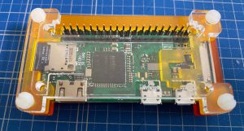
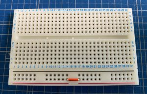
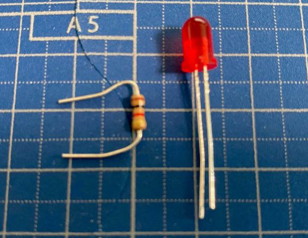
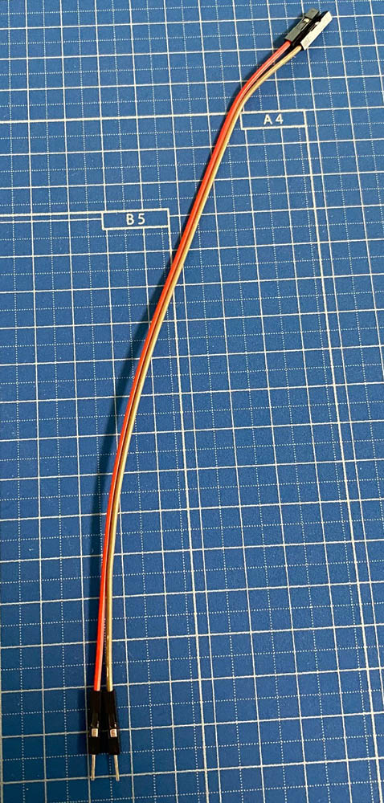
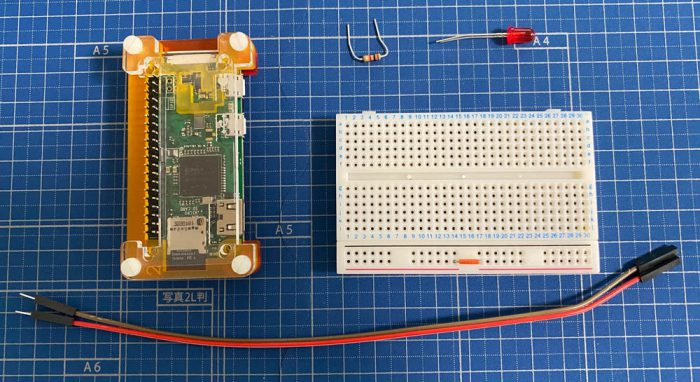
본격적으로 라즈베리파이에서 LED를 켜보기에 앞서
LED가 연결한다고 혼자서 저절로 켜지는게 아니기때문에 코딩을 해주셔야만 합니다.
샘플 소스를 보시고 따라만 하셔도 문제없이 LED를 켜보실수가 있습니다.
컴퓨터에 개발환경이 구축이 되어있으시면 개발환경에서 하셔도 되며
개발환경이 구축이 안되어 있는 분은 가장 간단한 방법으로 메모장을 이용해서
코딩하는 방법을 알아보도록 하겠습니다.
일단 텍스트 문서파일을 추가 합니다.
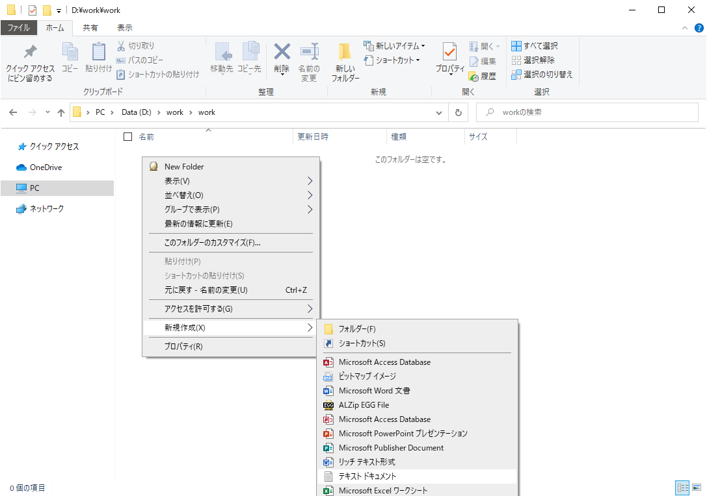
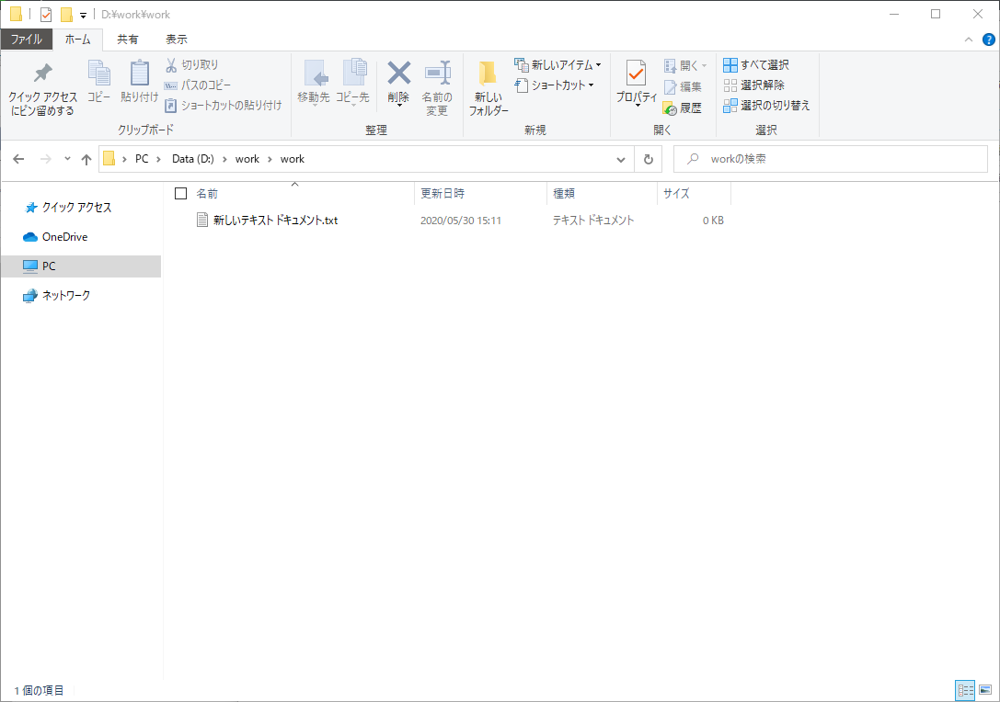
파일명을 확장자까지 아래와같이 변경해 주세요.
1 | gpio_led_turn_on.py |
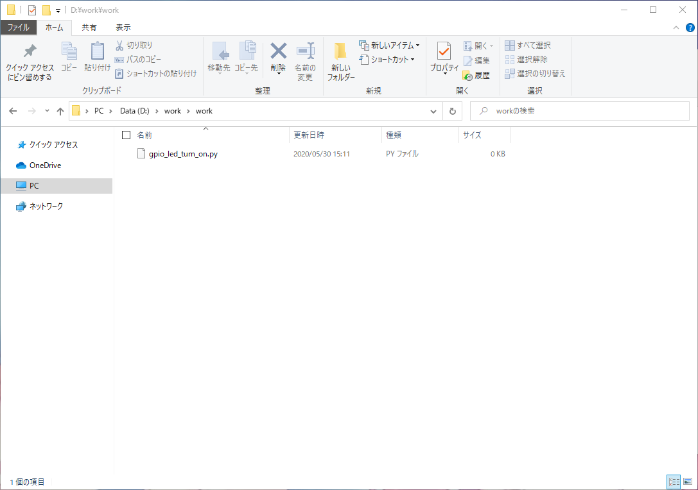
파일을 메모장으로 여시면 당연히 아무것도 없는 상태이므로 이제부터 코딩을 해보도록 합니다.
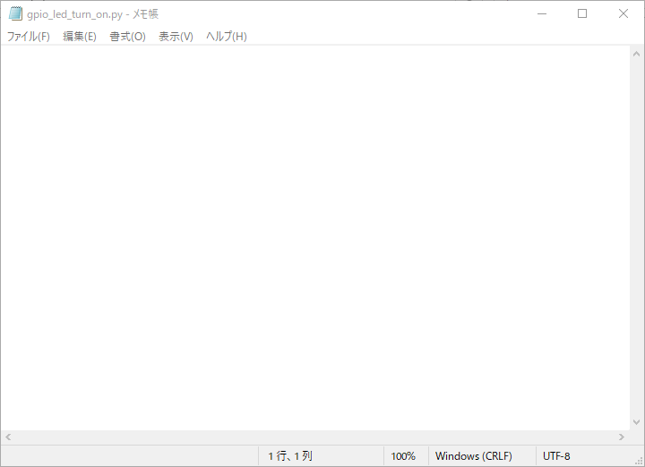
소스코드를 입력하신후 저장을 합니다.
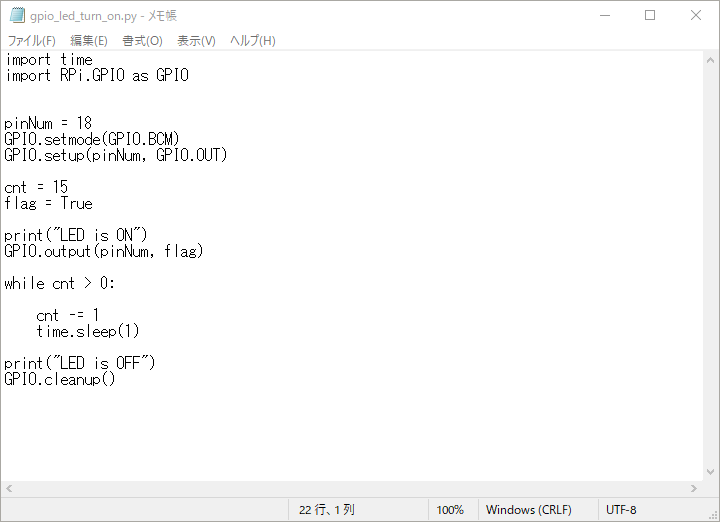
아래는 LED를 점등하기 위한 소스코드 입니다.
1 | import time |
그리고 두번째 소스파일을 준비합니다.
두번째 소스파일은 파일명을 확장자까지 아래와같이 변경해 주세요.
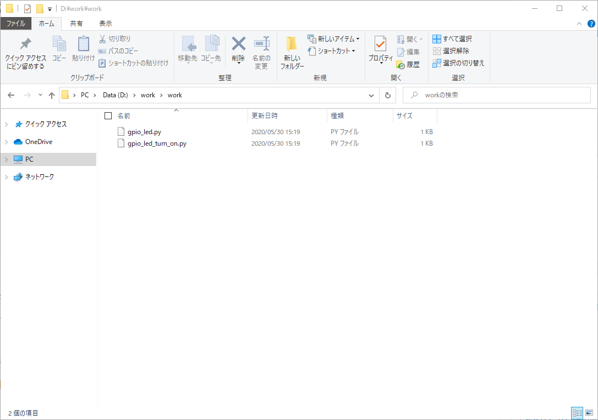
1 | gpio_led.py |
추가하신 파일도 메모장으로 여신후 아래의 소스코드를 입력해 주세요.
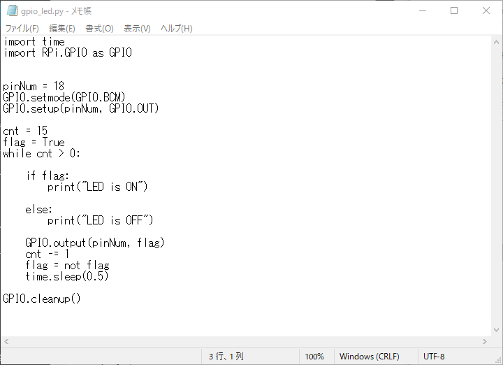
1 | import time |
저장한 소스파일은 삼바를 통해서 라즈베리파이의 임의의 폴더에 소스파일을 배치해 주세요.
삼바가 설정이 안되어 있으신 분은 삼바 연결설정을 하시고 다음단계를 진행해 주세요.
점퍼케이블을 알맞은 PIN에 연결하기 위해선 우선
라즈베리파이에서 GPIO를 사용하기전 알아두어야 할 사항을 확인해주시기 바랍니다.
저는 PIN번호 18번 GPIO 24번에 빨간색 점퍼케이블을 연결을 했습니다.
두번째 점퍼 케이블은 GND와 연결을 해주시면 되겠습다.
저의 경우는 PIN번호 34번에 있는 GND에 연결을 했습니다.
플레이트 보드에 LED와 저항과 점퍼케이블 연결이 끝나셨으면
VNC를 이용해 라즈베리파이에 접속하신후 터미널을 실행 하십니다.
터미널을 여신후 라즈베리파이에 넣어두신 소스파일이 있는 경로까지 이동 하십니다.
첨 실행해 볼것은 15초동안 LED가 점등되는 gpio_led_turn_on.py를 실행을 합니다.
아래와 같이 콘솔에 명령어를 입력해 주세요.
1 | $ sudo python ./gpio_led_turn_on.py |
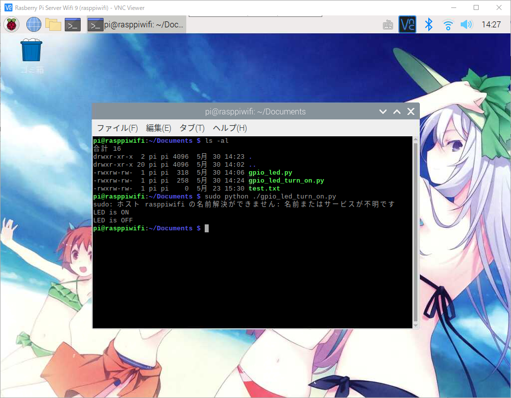
LED점등 프로그램을 기동하시면 아래의 사진과 같이 잘 안보이시겠지만 미묘하게
15초동안 불이 켜지는것을 확인 하실수 있습니다.
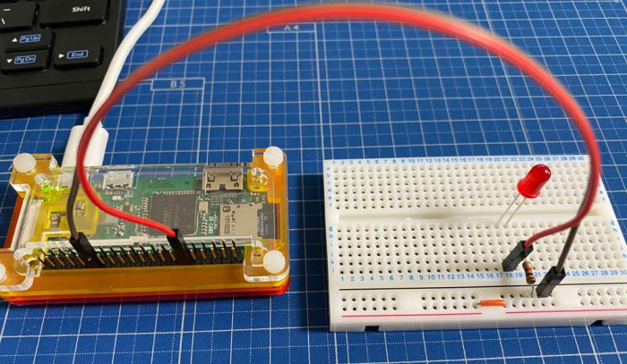
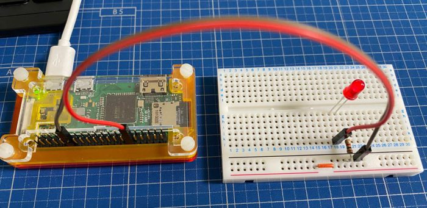
이번에는 두번째 소스파일을 실행 합니다.
1 | $ sudo python ./gpio_led.py |
두번째 LED점등 소스파일을 실행하시면
0.5초간격으로 15번 LED가 켜졌다 꺼졌다를 반복하는것을 확인 하실수 있습니다.
시작은 간단한 LED키고 끄는것을 해보았습니다.
다음에는 좀더 복잡한것을 가지고 오도록 하겠습니다.